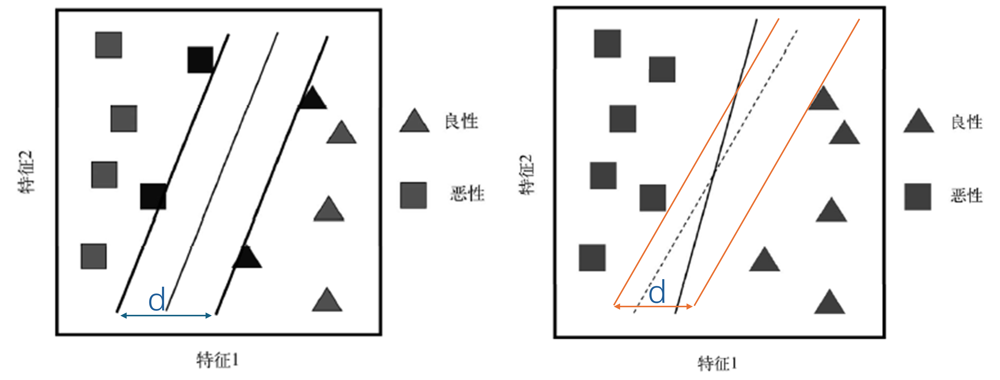
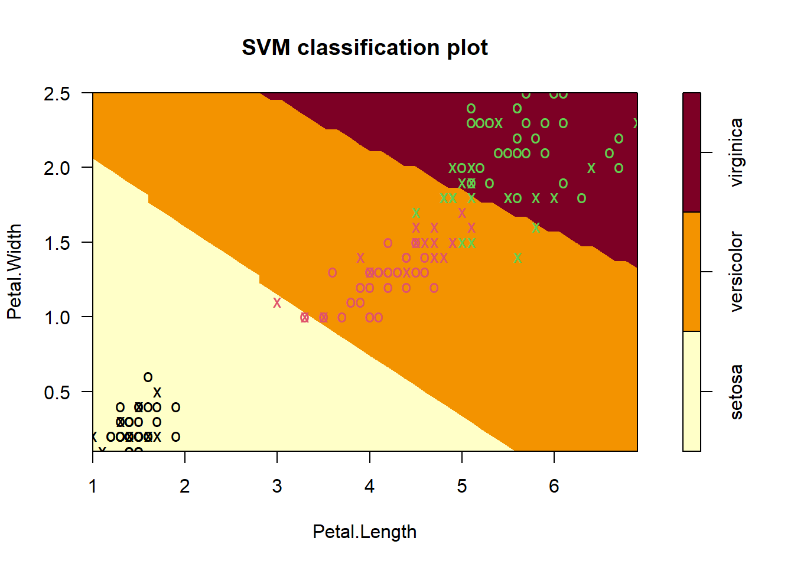
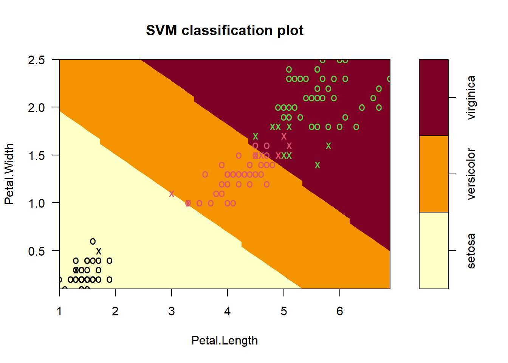

library(e1071)
#example("svm")15 支持向量机
支持向量机（support vector machine，SVM）是一个非常强大的算法，它既可以用于回归也可以用于分类，而且还可以用于生存分析中，在神经网络中也很热门。这篇主要介绍如何在R语言中实现支持向量机。
15.1 算法简介
支持向量机的原理非常复杂，我这里尽量用简单的话说明。还是用前一章中的二分类问题为例进行说明。
下图有两个特征可以用来预测肿瘤是”良性”还是”恶性”，SVM的关键就是找到一条完美的线（或者平面）把它分成两类，下图中展示的实线和虚线都可以做到这一点，但这只是无数条线其中的两条而已。

如果数据的维度多于2，那就不是一条线能解决的了，那就需要一个平面，这个平面就被称为超平面，
如果一个超平面能够把数据分为两类，每类只包含一种类别，那么这个超平面就是数据的决策边界。比如上图中的实线和虚线就是两个决策边界。
如上图所示，我们可以找到多个决策边界把数据分为两类，但是哪一个才是最好的呢？
如下左图所示，我们把其中一条决策边界（比如实线）往左右两边移动，当碰到第一个数据点时停下来，此时两条实线之间的距离就被称为（中间）实线这条决策边界的边际（margin）。

支持向量机就是要找到使得边际最大的决策边界来实现对数据的分类。如上右图所示的边际就明显小于作图所示的边际。
如果这条决策边界非常完美，能够把所有的样本完美分成两类，那么此时模型的误差就是0，因为完全分类正确，但是此时模型对新数据的预测可能会出现较大的误差，也就是说出现了过拟合。
上图中在左右边界上的样本被称为支持向量（support vector）。
实际生活中很多数据并不是完全线性可分的（上面这个例子是线性可分的），为了能够适用于非线性的数据，支持向量机可以将原始数据进行各种转换，这就是核技巧（kernel trick），或者叫核函数（kernel function）。通过使用的不同的核技巧，支持向量机可以适用于多种不同类型的数据。
15.2 加载R包
SVM有多种实现方法，最著名的就是台湾林智仁教授开发的LIBSVM了，python中的sklearn中的支持向量机就是使用的这种方法，在R语言中是通过e1071这个包实现的。
该包还可以实现缺失值插补、异常值检测、计算偏度/峰度、多种算法的超参数调优（决策树、随机森林、knn、神经网络等）等，功能非常强大。
15.3 参数解释
支持向量机在e1071中主要是通过svm()这个函数实现的。既可以使用公式语法，也可以使用x/y的形式，此时如果因变量y是因子型，则函数默认这是一个分类任务，如果y不是因子型则默认为回归任务，如果不提供y，则默认是异常值检测。
svm(x, y = NULL, scale = TRUE, type = NULL, kernel = "radial", degree = 3,
gamma = if (is.vector(x)) 1 else 1 / ncol(x),
coef0 = 0, cost = 1, nu = 0.5, class.weights = NULL, cachesize = 40,
tolerance = 0.001, epsilon = 0.1, shrinking = TRUE, cross = 0,
probability = FALSE, fitted = TRUE, ..., subset, na.action = na.omit)部分参数介绍：
scale：是否进行标准化，默认是TRUEtype：任务类型，比如回归还是分类，具体可选以下几种：C-classification，nu-classification，one-classification(for novelty detection)，eps-regression，nu-regressionkernel：e1071中的核函数有4种，每个核函数都有最适合的情况，但通常都会选择径向基核函数。除了线性核之外，其余3种都有属于自己的超参数：linear：线性核函数polynomial：多项式核函数，(3个超参数:gamma,degree,coef0)radial basis：RBF，径向基核函数，(1个超参数:gamma)sigmoid： (2个超参数:gamma,coef0)
degree：多项式核的阶数，默认是3，如果是1就类似于线性核gamma：默认是1/特征数量，取值范围是0到正无穷，一般在优化这个参数时会进行log转换，gamma越大，通常导致支持向量越多coef0：多项式核的参数，默认是0，需要整数cost：正则化程度，或者表示犯错的成本，类似于sklearn中的C，正整数。一个较大的成本意味着模型对误差的惩罚更大，从而将生成一个更复杂的分类边界，对应的训练集中的误差也会更小（也就是边际大），但也意味着可能存在过拟合问题，即对新样本单元的预测误差可能很大。较小的成本意味着分类边界更平滑，但可能会导致欠拟合class.weight：因变量的权重，比如svm(x, y, class.weights = c(A = 0.3, B = 0.7))，指定inverse会直接使用和类别比例相反的类别权重cachesize：使用的内存大小，默认40MBcross：交叉验证的折数，默认是0，不进行交叉验证。如果使用了交叉验证，结果中会多出一些额外信息，回归任务会多出：accuracies：每一折的准确率；tot.accuracy:平均准确率。 分类任务会多出：MSE:每一折的MSE；tot.MSE：平均MSE；scorrcoef:相关系数的平方
probability:是否生成各个类别的概率fitted：是否生成分类结果
这个核函数的概念非常重要，所以我做了一个表格：
| 核函数 | 中文 | 适用范围 | 参数 |
|---|---|---|---|
| linear | 线性核 | 线性数据 | 无 |
| polynomial | 多项式核 | 偏向于线性数据 | gamma/degree/coef0 |
| radial basis | RBF,高斯径向基核 | 偏向于非线性数据 | gamma |
| sigmoid | sigmoid核 | 非线性数据 | gamma/coef0 |
gamma/degree/coef0这3个参数对SVM的影响非常复杂，因为并不是完全的正相关或者负相关关系，尤其是对多项式核、sigmoid核来说，多个参数会共同影响，关系就更加复杂了，所以通常此时我们会使用网格搜索等方法确定这些参数的值。对于RBF核来说，它只有一个参数gamma，此时我们可以用学习曲线来确定最佳的gamma值。
15.4 建立模型
演示数据就用R语言自带的鸢尾花数据集，这个数据集是一个3分类的数据，其中Species是结果变量，为3分类，其余变量是预测变量。
rm(list = ls())
data(iris)
# 公式形式
model <- svm(Species ~ ., data = iris, probability = T)
# 或者x/y形式
x <- subset(iris, select = -Species)
y <- iris$Species
#model <- svm(x, y, probability = T)
print(model)
##
## Call:
## svm(formula = Species ~ ., data = iris, probability = T)
##
##
## Parameters:
## SVM-Type: C-classification
## SVM-Kernel: radial
## cost: 1
##
## Number of Support Vectors: 51
summary(model)
##
## Call:
## svm(formula = Species ~ ., data = iris, probability = T)
##
##
## Parameters:
## SVM-Type: C-classification
## SVM-Kernel: radial
## cost: 1
##
## Number of Support Vectors: 51
##
## ( 8 22 21 )
##
##
## Number of Classes: 3
##
## Levels:
## setosa versicolor virginica15.5 查看结果
查看支持向量：
# 51个支持向量，这是预处理(比如na.omit)后的序号
model$index
## [1] 9 14 16 21 23 24 26 42 51 53 54 55 57 58 60 61 64 67 69
## [20] 71 73 77 78 79 84 85 86 87 88 99 107 109 111 117 119 120 122 124
## [39] 126 127 128 130 132 134 135 138 139 143 147 149 150查看预测类别和预测概率，只有在建模时使用了probability=T，才能在predict()时使用此参数：
# 获取训练集预测结果
# newdata写测试集就是测试集结果
pred <- predict(model, newdata = x, probability = T)
# 查看结果
head(pred)
## 1 2 3 4 5 6
## setosa setosa setosa setosa setosa setosa
## Levels: setosa versicolor virginica
# 查看预测概率
head(attr(pred,"probabilities"))
## setosa versicolor virginica
## 1 0.9816955 0.01075790 0.007546567
## 2 0.9746218 0.01725092 0.008127315
## 3 0.9804885 0.01135611 0.008155367
## 4 0.9766379 0.01459413 0.008767961
## 5 0.9809263 0.01108326 0.007990473
## 6 0.9756922 0.01600990 0.008297935查看混淆矩阵：
# 混淆矩阵
table(pred, y)
## y
## pred setosa versicolor virginica
## setosa 50 0 0
## versicolor 0 48 2
## virginica 0 2 48
# 或者caret版混淆矩阵
#caret::confusionMatrix(table(pred, y))
caret::confusionMatrix(pred, y)
## Confusion Matrix and Statistics
##
## Reference
## Prediction setosa versicolor virginica
## setosa 50 0 0
## versicolor 0 48 2
## virginica 0 2 48
##
## Overall Statistics
##
## Accuracy : 0.9733
## 95% CI : (0.9331, 0.9927)
## No Information Rate : 0.3333
## P-Value [Acc > NIR] : < 2.2e-16
##
## Kappa : 0.96
##
## Mcnemar's Test P-Value : NA
##
## Statistics by Class:
##
## Class: setosa Class: versicolor Class: virginica
## Sensitivity 1.0000 0.9600 0.9600
## Specificity 1.0000 0.9800 0.9800
## Pos Pred Value 1.0000 0.9600 0.9600
## Neg Pred Value 1.0000 0.9800 0.9800
## Prevalence 0.3333 0.3333 0.3333
## Detection Rate 0.3333 0.3200 0.3200
## Detection Prevalence 0.3333 0.3333 0.3333
## Balanced Accuracy 1.0000 0.9700 0.9700三分类也是可以绘制ROC曲线的，只不过稍微复杂一点，大家有需要的可以参考ROC曲线绘制合集
15.6 可视化决策边界
如果预测变量超过1个就要使用formula，因为只能在两个维度上画出这个图，slice=list(Sepal.Width=3,Sepal.Length=4)表示要把Sepal.Width这一列都当成3，把Sepal.Length这一列都变成4，这个数值具体怎么影响这幅图也没找到合适的解释，希望有大佬能指点迷津。
plot(model, data = iris, formula = Petal.Width ~ Petal.Length,
slice = list(Sepal.Width = 3, Sepal.Length = 4),
svSymbol = "x" # 支持向量的形状
)
图中的x表示支持向量，o表示数据点。
15.7 不同核函数比较
我们把4种核函数的结果都画出来，放在一起比较下决策边界。
model_rbf <- svm(Species ~ ., data = iris, kernel = "radial")#径向基核
model_linear <- svm(Species ~ ., data = iris, kernel = "linear")#线性核
model_ploy <- svm(Species ~ ., data = iris, kernel = "polynomial")#多项式核
model_sig <- svm(Species ~ ., data = iris, kernel = "sigmoid")#sigmoid核
par(mfrow=c(2,2))
plot(model_rbf, data = iris, formula = Petal.Width ~ Petal.Length,
slice = list(Sepal.Width = 3, Sepal.Length = 4))
plot(model_linear, data = iris, formula = Petal.Width ~ Petal.Length,
slice = list(Sepal.Width = 3, Sepal.Length = 4))
plot(model_ploy, data = iris, formula = Petal.Width ~ Petal.Length,
slice = list(Sepal.Width = 3, Sepal.Length = 4))
plot(model_sig, data = iris, formula = Petal.Width ~ Petal.Length,
slice = list(Sepal.Width = 3, Sepal.Length = 4))
15.8 超参数调优
使用默认的tune.svm()调整超参数，我们就用常见的径向基核为例进行演示，我们同时调整2个超参数：gamma和cost。
set.seed(123)
tune_model <- tune.svm(Species ~ ., data = iris,
cost = 10^(-1:3), # 设置cost的值
gamma = 10^(-3:1), # 设置gamma的值
# 重抽样方法选择自助法，次数选择100次
tunecontrol=tune.control(sampling = "bootstrap",
nboot = 100
)#自助法
)
tune_model
##
## Parameter tuning of 'svm':
##
## - sampling method: bootstrapping
##
## - best parameters:
## gamma cost
## 0.01 100
##
## - best performance: 0.03924088错误率最低是0.03924088，此时gamma=0.01，cost=100。
使用这个超参数重新拟合模型：
model_final <- svm(Species ~ ., data = iris, cost=100, gamma=0.01)
print(model_final)
##
## Call:
## svm(formula = Species ~ ., data = iris, cost = 100, gamma = 0.01)
##
##
## Parameters:
## SVM-Type: C-classification
## SVM-Kernel: radial
## cost: 100
##
## Number of Support Vectors: 24
# 预测新数据
test_df <- head(iris)
pred <- predict(model, newdata = test_df)
caret::confusionMatrix(pred, test_df$Species)
## Confusion Matrix and Statistics
##
## Reference
## Prediction setosa versicolor virginica
## setosa 6 0 0
## versicolor 0 0 0
## virginica 0 0 0
##
## Overall Statistics
##
## Accuracy : 1
## 95% CI : (0.5407, 1)
## No Information Rate : 1
## P-Value [Acc > NIR] : 1
##
## Kappa : NaN
##
## Mcnemar's Test P-Value : NA
##
## Statistics by Class:
##
## Class: setosa Class: versicolor Class: virginica
## Sensitivity 1 NA NA
## Specificity NA 1 1
## Pos Pred Value NA NA NA
## Neg Pred Value NA NA NA
## Prevalence 1 0 0
## Detection Rate 1 0 0
## Detection Prevalence 1 0 0
## Balanced Accuracy NA NA NA可视化决策边界：
plot(model_final, data = iris, formula = Petal.Width ~ Petal.Length,
slice = list(Sepal.Width = 3, Sepal.Length = 4))
15.9 使用建议
- SVM对超参数值很敏感，建议多试几次；
- 对于分类任务，首选
C-classification和RBF(default)，表现好且超参数比较少，只有cost和gamma。libsvm的作者建议先对cost用一个很大的范围，比如1~1000，然后用交叉验证选择比较好的，最后用这几个选中的cost值再尝试不同的gamma； - 可以使用网格搜索实现超参数调优，
tune.svm()； - 对数据进行标准化会提高模型表现，强烈建议，
svm()默认会对数据进行标准化。
15.10 其他
除了支持向量机外，e1071包还支持对其他模型进行超参数调优，包括：
- tune.gknn()：generalized k-nearest neighbors
- tune.knn()：knn
- tune.nnet()：nnet，神经网络
- tune.randomForest()：随机森林
- tune.rpart()：决策树
这几个函数都是tune()的变体。每种算法可以调优的超参数都在帮助文档中有详细的说明，作为一个轻量化的调优R包来用是非常不错的选择，虽然我们有更好的方法。
支持向量机的递归特征消除，可参考推文：递归特征消除
15.11 参考资料
- example(“svm”)
- https://stackoverflow.com/questions/49877752/slice-option-in-plot-function-of-package-e1071
- https://c3h3notes.wordpress.com/2010/10/20/r%E4%B8%8A%E7%9A%84libsvm-package-e1071
- https://www.datacamp.com/tutorial/support-vector-machines-r
- https://rpubs.com/cliex159/865583
- 菜菜的sklearn课堂